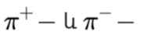

40. Տարրական մասնիկներ։ Հակամասնիկներ
Տարրական մասնիկներ
Արդի ֆիզիկայում տարրական մասնիկներ հասկացությունը երկակի իմաստ ունի։ Մի կողմից, այդ ընդհանուր անվանումը միավորում է ատոմների և ատոմային միջուկների կազմի մեջ մտնող մասնիկները (էլեկտրոն, պրոտոն, նեյտրոն), հատկություններով դրանց մոտ մի շարք այլ մասնիկների հետ։ Մյուս կողմից, քանի որ տարրական մասնիկների մեծամասնությունը (այդ թվում նաև պրոտոնը և նեյտրոնը) ունի ներքին կառուցվածք, իմաստ ունի նրանցից առանձնացնել «իսկական» (օրինակ, էլեկտրոնը), որոնց բաղադրիչ մասերի առկայությունը փորձով դեռես չի հայտնաբերվել։ Այս իմաստով մասնիկների տարրական լինելը հարաբերական հասկացություն է և արտացոլում է փոքր հեռավորությունների՝ փորձով հասանելի այն սահմանը (ներկայումս մոտ 1016 սմ), մինչև որը նշված մասնիկները ներքին կառուցվածք չեն դրսևորում։ Տարրական մասնիկներ հասկացությունը պատմականորեն ծագել է հին աշխարհի փիլիսոփաների այն պատկերացումներից, որոնց համաձայն մանրագույն անբաժանելի մասնիկների՝ «ատոմների» տարբեր զուգակցումներն են որոշում նյութի դիտվող հատկությունների բազմազանությունը։ Նյութի կառուցվածքի ատոմամոլեկուլային տեսության զարգացումը հանգեցրել է նրան, որ արդեն XIX դ․ վերջին տարրական մասնիկներ հասկացությունը ձեռք է բերել մոլեկուլների և ատոմների բաղադրիչ մասերի ավելի կոնկրետ իմաստ։ 1897 թվականին Ջ․ Զ․ Թոմսոնը փորձով հայտնաբերել է այդ մասնիկներից մեկը՝ Էլեկտրոնը։ Տարրական մասնիկների ֆիզիկայի ձևավորմանն էապես նպաստել են ռադիոակտիվության հայտնագ ործումն ու ուսումնասիրումը և, հատկապես, է․ Ռեզերֆորդի փորձերը, որոնց շնորհիվ 1911 թվականին հայտնագործվել են ատոմային միջուկները, իսկ 1919 թվականին բացահայտվել է, որ պրոտոնները մտնում են միջուկների կազմի մեջ։ 1932 թվականին, երբ Զ․ Չադվիկը հայտնաբերեց նեյտրոնը, պարզ դարձավ ատոմների և դրանց միջուկների բաղադրիչների լրիվ կազմը։ Տարրական մասնիկների ֆիզիկայի հետագա զարգացումն արդեն հիմնականում ընթացել է միջուկային ֆիզիկայից անկախ, նախ՝ տիեզերական ճառագայթման ուսումնասիրման ճանապարհով (1930—1950-ական թթ․)» իսկ հետո, 50-ական թվականներից սկսած, երբ գործարկվեցին առաջին խոշոր արագացուցիչները, փորձերը շարունակվել են նաև լաբորատոր պայմաններում։ Այդ փորձերում գրանցվել են մի շարք նոր մասնիկներ՝ տարբեր զանգվածներով, կյանքի տևողություններով, տրոհման և նյութի հետ փոխազդեցության տարբեր եղանակներով։

Անհնար կլիներ հասկանալ այդ մասնիկների հատկությունները, եթե չլիներ այն վիթխարի առաջընթացը, որին հասել էր տեսական ֆիզիկան մեր հարյուրամյակի կեսերին։ Քվանտային մեխանիկան, հարաբերականության տեսությունը և դաշտի քվանտային տեսությունը տվել են այն լեզուն, որով հնարավոր եղավ նկարագրել փոքր հեռավորությունների վրա և լույսի արագությանը մոտ արագություններով կատարվող ֆիզիկական երևույթները։ Որոշ մասնիկների գոյությունն, իսկ հետևում է քվանտային տեսության սկզբունքներից։ Այսպես, էլեկտրամագնիսական ճառագայթման քվանտային տեսությանը նվիրված առաջին աշխատանքներում արդեն (Մ․ Պչանկ, 1900, Ալբերտ էյնշտեյն, 1903) որոշակիորեն կանխագուշակվել էր էլեկտրամագնիսական դաշտի քվանտի՝ ֆոտոնի գոյությունը։ էլեկտրոնի քվանտային տեսությունից (Պ․ Դիրակ, 1928—1931) բխել է էլեկտրոնի հակամասնիկի՝ պոզիտրոնի (e+) գոյությունը՝ մասնիկ, որը հայտնաբերվել է տիեզերական ճառագայթներում (Կ․ Աևդերսոն, 1932)։ Տարրական մասնիկների քվանտային բնույթը դրսևորվում է նրանով, որ այդ մասնիկներից յուրաքանչյուրն ունի հանգստի զանգվածի, շարժման քանակի սեփական մոմենտի (սպին), էլեկտրական լիցքի որոշակի ընդհատուն արժեք։ Տարրական մասնիկների մասնակցությամբ ընթացող բոլոր պրոցեսներում պահպանվում են էներգիան, իմպուլսը և շարժման քանակի մոմենտը, մի բան, որ արտացոլում է տարածության և ժամանակի համասեռությունն ու իզոտրոպությունը փոքր հեռավորությունների վրա։ Վերլուծելով β-տրոհման երևույթը էներգիայի և իմպուլսի պահպանման օրենքի տեսանկյունից, Վոլֆգանգ Պաուլին 1930 թվականին ենթադրել է, որ այդ տրոհման արգասիքներում գոյություն ունի մի յուրօրինակ մասնիկ ևս՝ նեյտրինո (v)։ Վերջինիս հայտնաբերման փորձարարական տարբեր մեթոդներ են առաջարկել Հ․ Բետեն ու Ռ․ Փայերլսը, ինչպես նաև խորհրդային ֆիզիկոսներ Ա․ Ի․ Լեյպունսկին, Ա․ Ի․ Ալիխանովն ու Ա․ Ի. Ալիխանյանը (1938)։ Այդպիսի փորձեր կատարել է ամերիկացի փորձարար Ջ․ Ալլենը, 1942 թվականին, սակայն նեյտրինոյի չափազանց թույլ փոխազդեցությունը նյութի հետ դիտվել է միայն 1953 թվականին (Ֆ․ Ռայնես, Կ․ Կոուեն, ԱՄՆ)։ Տարրական մասնիկների փոխազդեցությունները դրսևորվում են նրանց փոխադարձ կլանման և առաքման, ցրման կամ տրոհման պրոցեսներում։ Փոխազդեցությունների առաջին քվանտային տեսությունը եղել է քվանտային էլեկտրադինամիկան՝ էլեկտրամագնիսական փոխադզեցության տեսությունը, որը դեռևս 1920-ական թթ․ ձևակերպել է Պ․ Դիրակը, իսկ վերջնականորեն մշակել են Ռ․ Ֆեյնմանը, Ցու․ Շվինգերը և Ս․ Տոմոնագան, 40—50-ական թթ․։ Այն նախատիպ է ծառայել տարրական մասնիկների մյուս՝ ուժեղ և թույլ փոխազդեցությունների տեսական նկարագրման համար։ Պրոտոնի չափերի կարգի (10~13 սմ) հեռավորությունների վրա ուժեղ, էլեկտրամագնիսական և թույլ փոխազդեցությունների ինտենսիվությունները հարաբերում են ինչպես 1։102։ 105։ Ուժեղ փոխազդեցության դրսևորում են, օրինակ, այն ուժերը, որոնք պահում են պրոտոնները և նեյտրոնները միջուկի ներսում։ Թույլ փոխազդեցության օրինակ են β-տրոհումը կամ տիեզերական ճառագայթներում հայտնաբերված (Կ․ Անդերսոն, Մ․ Նեդերմեյեր, 1936 տրոհումը։ էլեկտրոնի և նեյտրինոյի նման, մյուոնը ուժեղ չի փոխազդում, այսինքն պատկանում է չեպտոնների դասին։ Թույլ փոխազդեցությունների սկզբնական տեսությունը, որն ստեղծել է է․ Ֆերմին, 1934 թվականին, հնարավորություն է տվել նկարագրելու ոչ միայն 13 և (i-տրոհումները, այլև տարրական մասնիկների ուրիշ թույլ տրոհումներ։
Հակամասնիկներ
Հակամասնիկներ, տարրական մասնիկների համախումբ։ Յուրաքանչյուր տարրական մասնիկի համապատասխանում է հակամասնիկ՝ օժտված հակառակ նշանի քվանտային թվերով (էլեկտրական լիցք, լեպտոնային կամ բարիոնային թվեր, տարօրինակություն և այլն)։ Մյուս հիմնական բնութագրերը, ինչպիսիք են զանգվածը, կյանքի տևողությունը, սպինը, իզոսպինը (իզոտոպային սպին), մասնիկի և հակամասնիկի համար նույնն են։
Մասնիկ-հակամասնիկ զույգի օրինակներ են էլեկտրոնը և պոզիտրոնը, պրոտոնը և հակապրոտոնը, նեյտրոնը և հականեյտրոնը, նեյտրինոն և հականեյտրինոն,  մեզոնները և այլն։ Հակամասնիկներից շատերի գոյությունը հաստատված է փորձով։